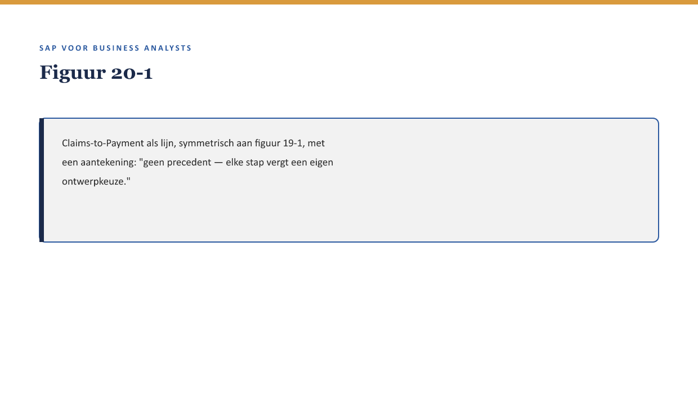
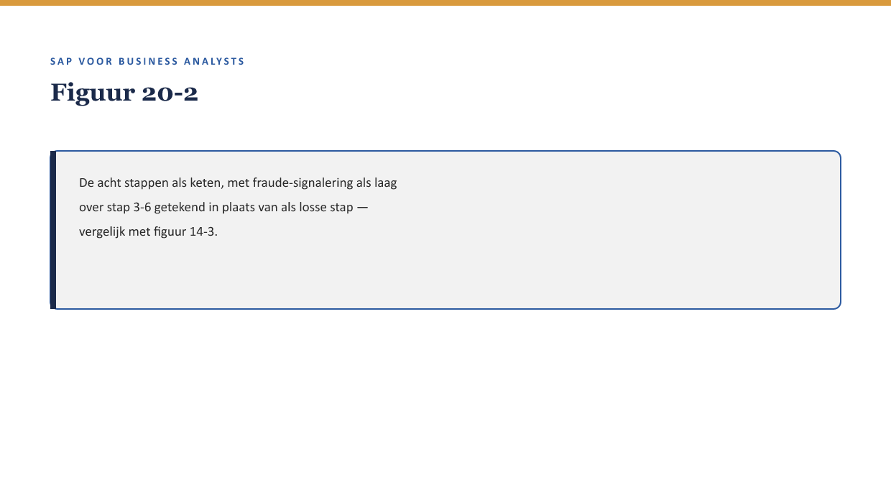

Deel 20 — Case: Claims-to-Payment ontleed
Reader · Niveau 2 Professional · Cursus SAP voor Business Analysts · Ductus
Dit deel herhaalt de aanpak van deel 19, nu toegepast op FS-CM.
Leerdoelen
Na dit deel kun je:
- het volledige Claims-to-Payment-proces end-to-end beschrijven, van melding tot uitkeringsboeking;
- bij elke processtap aanwijzen welk deel uit 13-18 daar de onderliggende laag vormt;
- de overgangen in dit proces vergelijken met die uit Order-to-Cash (deel 19) — waar lijken de risico’s op elkaar, waar niet;
- beoordelen waarom Claims-to-Payment, zonder bestaand precedent (↗ deel 13 §1), extra aandacht vergt bij het ontwerpen van de overgangen;
- een eigen end-to-end analyse opstellen voor een fictief schadeproces-scenario.
Studielast: één dagdeel klassikaal, circa drie uur zelfstudie.
1. Dezelfde vraag, ander proces
Waar deel 19 Order-to-Cash ontleedde met acht bekende lagen als bouwstenen, herhaalt dit deel diezelfde vraag voor FS-CM: van melding tot uitkering, wat is de keten, en waar zitten de overgangen? Het verschil: bij FS-CM is er geen bestaand Panorama-precedent (↗ deel 13 §1) om als ijkpunt te gebruiken — de keten moet grotendeels vanuit het niets ontworpen worden.

2. Waarow dit voor de BA telt
Waarom dit voor de BA telt. Waar bij Order-to-Cash bekende lagen alleen samengevoegd hoefden te worden, vergt Claims-to-Payment dat een BA de keten zelf mede construeert. Dat is een zwaardere, ontwerpende vorm van dezelfde vaardigheid.
3. Claims-to-Payment, stap voor stap
| Stap | Wat gebeurt er | Onderliggende laag |
|---|---|---|
| 1. Melding | Een polishouder meldt een gebeurtenis | Deel 13 §3.1 |
| 2. Registratie | Claim-object wordt vastgelegd | Deel 13 §3.2 |
| 3. Eerste beoordeling | Compleetheid en polis-koppeling worden gecontroleerd | Deel 13 §3.3, deel 4 (stamgegevens) |
| 4. Dekkingsbeoordeling | Getoetst aan de FS-PM-polis | Deel 13 §4 |
| 5. Fraude-signalering | Patroonherkenning als doorlopende laag | Deel 14 §5 |
| 6. Goedkeuring/statuswijziging | Statusmodel wordt doorlopen | Deel 16 |
| 7. Uitkering | Via FS-CD naar Accounting | Deel 14 §3, deel 15 |
| 8. Bevestigingsoutput | Notificatie naar polishouder | Deel 18 |

4. Vergelijking met Order-to-Cash: waar lijken de risico’s, waar niet
Overeenkomst: net als bij Order-to-Cash zit het risico vooral in overgangen, niet in de stappen zelf. Verschil: de overgang tussen stap 3-4 (eerste beoordeling → dekkingsbeoordeling) is bij Claims-to-Payment risicovoller dan enige vergelijkbare overgang bij Order-to-Cash, omdat hier een cross-modulekoppeling plaatsvindt (FS-CM raadpleegt FS-PM) die bij Order-to-Cash niet nodig was — Order-to-Cash bleef grotendeels binnen FS-PM zelf.
Kernzin — Een overgang tussen twee modules (FS-CM naar FS-PM) draagt een extra risicolaag ten opzichte van een overgang binnen één module: niet alleen “is de volgende stap correct getriggerd,” maar ook “is de juiste, actuele informatie uit de andere module daadwerkelijk opgehaald” (↗ deel 13 §4, deel 4).
5. Waarom dit precedentloze proces extra zorgvuldigheid vergt
Bij Order-to-Cash kon een fit-gap-analyse leunen op wat Panorama al deed. Bij Claims-to-Payment moet elke stap in de keten hierboven zelf beargumenteerd worden: waarom deze volgorde, waarom deze overgang hier en niet ergens anders. Dit is precies waarom deel 21 (Ketenintegratie) volgt op dit deel — nog voordat de FS-PM/FS-CM-keten definitief is vastgelegd, moet worden gekeken naar hoe zij elkaar op meer plekken raken dan alleen bij dekkingsbeoordeling.
6. Kruisverwijzingen
- ↗ Deel 13-14, deel 16, deel 18: elke laag van deze keten in detail.
- ↗ Deel 19: de vergelijkbare analyse voor FS-PM (Order-to-Cash).
- ↗ Deel 21: Ketenintegratie — waar FS-PM en FS-CM elkaar op meerdere plekken raken.
Kernbegrippen
Claims-to-Payment · cross-modulekoppeling · precedentloos procesontwerp
Samenvatting in vijf zinnen
- Claims-to-Payment brengt de FS-CM-lagen (deel 13-14, 16, 18) samen in één keten, van melding tot uitkering.
- Zonder bestaand precedent moet deze keten grotendeels zelf ontworpen worden, in plaats van alleen samengevoegd.
- Net als bij Order-to-Cash zit het risico vooral in overgangen, niet in de stappen zelf.
- De overgang tussen eerste beoordeling en dekkingsbeoordeling is extra risicovol door de cross-modulekoppeling met FS-PM.
- Dit precedentloze karakter vraagt om extra zorgvuldigheid, en vormt de directe aanleiding voor deel 21.